|
|
March 3rd, 2011
Last week I launched Faceted Reversi, a two-player strategy game for Windows Phone 7. In this game, you play Reversi against other people who have also downloaded the application. It uses Correspondence to coordinate moves between the two phones. So far the adoption has been … slow.
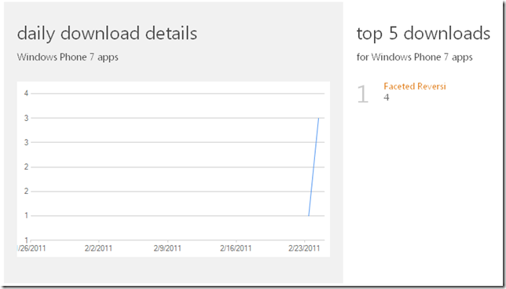
Faceted Reversi has two ways to play:
In pass-the-phone, you play against another person, but the two of you sit together and share a device. It just acts like a game board. In remote mode, you play against somebody else with their own device. Think “Words with Friends”. To begin a remote game, you either pick someone that you know or let the server choose a random player.
Faceted Reversi is priced at $1.99, and has a trial mode. In trial mode, you can play as many pass-the-phone games as you like. But you can only play one remote game. To unlock the ability to play more games, you have to pay.
There are a couple of problems with this revenue model. First, trial apps don’t appear in the Free section of the Marketplace. And second, the network is a catch-22.
Free vs Trial
Neither iOS nor Android has trial mode built into their applications. You have to buy it before you can try it. As a result, many developers published two versions of their apps: the free one and the paid one. Windows Phone implemented the trial feature to solve this problem. A developer can publish one application, yet still give the end user both experiences.
But Windows Phone also has a Free section in the Marketplace. This section includes applications that have a $0.00 price tag. It does not include applications with a trial mode. Many developers have found that people download apps from the Free section much more frequently than they do from the paid sections. As a result, developers have been abandoning the trial model and publishing two versions of the app.
Catch-22
The only reason to pay for Faceted Reversi is to play games against the network of people who have also paid for Faceted Reversi. The value of the application is proportional to the size of this network. When nobody has bought the app, nobody is in the network. And when nobody is in the network, nobody will buy the app. The only way to get people to buy the app is to seed the network.
Faceted Reversi Free
To solve these two problems, I am working on Faceted Reversi Free. This will be a completely separate app. It will be priced at $0.00, so it will appear in the Free section of the Marketplace. This should drive higher download numbers. I don’t think that a full order of magnitude increase (i.e. 40) is unreasonable to expect.
This version of the game will have only one feature: random player. You will be able to play against another player, but you won’t be able to say who. This will have the effect of seeding the network with a sea of random players … at least 40 of them!
This version will also serve ads. Before each game, it will display an ad while it waits for the server to select a random player. This should provided some revenue to keep the Correspondence server running, and incentivize people to buy the paid version.
In upcoming posts, I’ll describe how to build a two-player game with Correspondence. I’ll also keep you posted regarding the uptake of Faceted Reversi Free and whether my clever scheme succeeds.
Posted in Uncategorized | 2 Comments »
February 15th, 2011
Do you need a Silverlight or Windows Phone 7 TextBox to update on every key? Do you need to data bind a visual state or a set of radio buttons to an enumeration? How about making a control visible whenever a property is equal to a certain value?
Itzben is a collection of universally useful XAML behaviors, value converters, and styles. Open the Assets tab in Blend and drag them onto your art board.
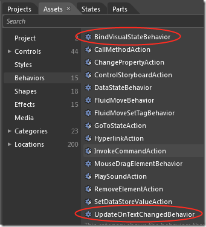
There are four ways to enjoy Itzben.
NuGet Powershell
Just open the NuGet Package Manager Console and type:
install-package itzben
Or if you are in a Windows Phone 7 project:
install-package itzbenwp7
NuGet Dialog
Don’t do Powershell? Just Add Library Package Reference:
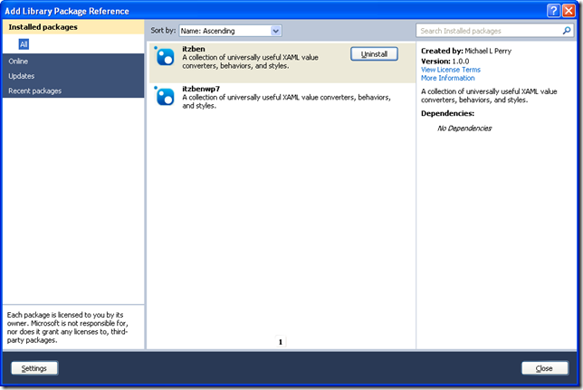
Zip file
Don’t want to install NuGet? Just download the zip file from Codeplex. Find the Itzben.dll for your project type.
Source code
Don’t want to take a dependency on a third-party library? I’m with you. Every Itzben class is self-contained. Just go to the Codeplex Source Code page, pick the class you want, and copy it directly into your project.
Contribute
Please enjoy this collection. It was created as a way to stop writing the same code in every project. And if you have a behavior, value converter, or style that you find universally useful, please open an issue and we’ll include your patch.
Posted in Uncategorized | No Comments »
February 1st, 2011
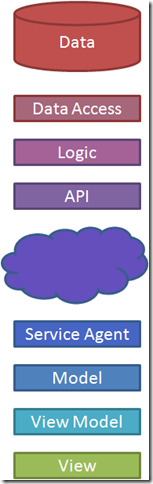 Take a look at this architecture diagram. Ask yourself where the domain knowledge resides.
The view is obviously domain-specific. Even a web application running in a general-purpose browser is still a hand-crafted tree of HTML documents. Somebody put effort into the view with specific knowledge of the problem domain.
The model is obviously domain-specific. By today’s best practices, that’s where most of your domain logic lives. But that’s not where it stays. It leaks forward into the view model, and backward into the service agent.
The API is domain-specific. It contains service methods, document types, or REST resources with names from the problem domain. If you were to build a different system, you would have to build a completely different API.
The logic layer is domain-specific. This layer hosts all of the services that the client calls. Most of these services are simple CRUD operations that pass through to the database. But a few add value to the data. In either case, these service functions are only useful within a specific problem domain.
The database is often domain-specific. Relational databases understand the schema of the data that they store, which is how they can execute complex ad-hoc queries over that data. But some databases – particularly the document-oriented NoSQL databases – are schemaless. Since they aren’t given any domain knowledge, they can be used for any problem domain.
Domain knowledge has infiltrated almost every layer of the architecture. The only layers that are spared are the data access layer (e.g. Hibernate, Entity Framework) and perhaps the database (e.g. MongoDB, CouchDB).
Every other layer we must write ourselves. We must write it anew for every application we build. We must redeploy it each time we add even a single feature to an application.
A typical deployment scenario
Suppose you have an application in production. You want to add a new feature to that application. What do you have to do?
Unless it’s trivial, that feature is going to record a new piece of data. That means that we will need to modify the schema to add a column, or perhaps a table. We have to be careful not to change or delete any existing columns, as that will complicate deployment. That change will be scripted and deployed to the database.
To expose that feature, we need to add logic and a new API call. We have to be careful how we modify any existing APIs so that they are backward compatible. That change will be built and deployed to the servers. It must be deployed after the database script is run.
Third, we need to avail our users of the new feature. The service agent must be regenerated, and the new data added to the model. We then modify the view and view model to present that new functionality. If this is a web application, these components are deployed with the server: they are the generated HTML and attached JavaScript files. If this is a client application, then we make a new MSI available for download.
All of these steps must be completed in three different environments. The development environment is updated so frequently that we need an automated build. QA is updated less frequently, but still more than once for a new release. Production is updated infrequently, and with the greatest of care.
Every one of these versioning and deployment tasks costs money. So far, that cost has just been accepted as the price of doing business. That’s about to change.
Correspondence
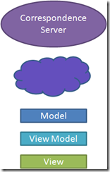 Correspondence changes the architectural diagram. It eliminates many of the layers. Most importantly, it removes domain knowledge from the server.
Correspondence is an application-agnostic synchronization engine. You download the open-source client libraries and tools, and express your model in a language called Factual. You then point your client at a correspondence server. A free server is provided for development and testing. More robust servers will be available soon for production scenarios.
While Correspondence can be used for web applications, it is best suited for rich clients (WPF or Windows Phone 7 currently). Clients use a publish/subscribe mechanism for sharing data with one another through a common Correspondence server.
A Correspondence rich-client deployment scenario is simpler than the server-based alternative. To add a feature, you first modify the Factual model. Like before, you have to be careful to retain backward compatibility. Then you expose that feature through the view model and the view. With that, you are done. No database scripts. No API changes.
Developers can test their changes without redeploying a development server. They will work either against a local Correspondence server, or one shared by the development team. But none of their changes are deployed to the server. While automated builds are still a good thing, they are not necessary for testing changes in development.
QA will have its own Correspondence server. Again, no part of the application is deployed to this server. This means that testers can pick up builds and start testing independently, even if other members of the team are testing earlier builds.
Production deployments are just client updates. In Windows Phone 7, this is pushed through the Marketplace. For a desktop solution, automatic updates, MSI downloads, and ClickOnce are all viable options. No software or database changes need to be deployed to a production server.
Services
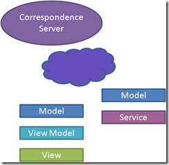 Correspondence eliminates the need for CRUD operations on the server. But what if you have server-side logic? What if you have work that can’t be done on the client? Then you need to write a service.
A Correspondence service is nothing more than a faceless client. It doesn’t run on the client device, but it is still a client of the Correspondence Server. It uses the same Factual model as the client. It uses the same publish/subscribe mechanism to exchange data with other clients. Services can even be joined together in a service bus configuration.
Services change the deployment story; you need to deploy them to a server. These services may integrate with a relational database to provide reporting. If so, then you will again need to deploy database changes. But these services no longer sit between the client and the database. As a result, they can be deployed independently. They don’t even need to be deployed to machines accessible by the client.
Web applications
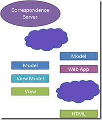 While Correspondence is best suited to rich-client applications, it can be used for web apps as well. Most likely, you will have a web interface for infrequent visitors, and a rich-client interface for regular users.
The web application will use the Factual model to query and record its data. Then it will generate the same kind of HTML experience that we are used to. If a richer AJAX interface is still desired, then the additional API and service agent layers can be added. You must weigh the benefits of these layers against the extra development and deployment costs they impose.
A web application backed by Correspondence gains the same benefits as one using a NoSQL database. Since the data layer is schemaless, no database changes need to be deployed. If all users access your application through the web, then there is little extra benefit that Correspondence can offer. But if you want to augment the web experience with a rich-client experience, then Correspondence has a place.
In a layered client/server architecture, domain knowledge resides at almost every layer. That domain knowledge costs us development time and deployment risk. Application-agnostic integration servers like Correspondence remove domain knowledge from many server-side components, making it easier to build, test, and deploy solutions.
Posted in Correspondence | No Comments »
January 31st, 2011
Software architectures have evolved since the first computers were put to use. Early computer operators would hardly recognize the systems we build today. Architecture continues to evolve at a pace where we will not recognize the systems of tomorrow.
 A computer used to be a large, noisy machine enshrined within a windowless room. The only access to it was through punched cards, teletype printouts, and eventually dumb terminals. Computer programs were input/output routines that ran business logic over data. A computer used to be a large, noisy machine enshrined within a windowless room. The only access to it was through punched cards, teletype printouts, and eventually dumb terminals. Computer programs were input/output routines that ran business logic over data.
Then the personal computer revolution hit and a computer became a briefcase-sized box sitting on your desk with a television on top. People could run their own logic on their own data without having to lease space on the mainframe. Rather than building custom programs for every need, people could buy applications. Thus the software industry was born.
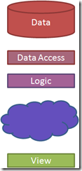 Unfortunately, applications didn’t make it easy to collaborate with other people. The data and the logic were both on your PC. And so people adopted the World Wide Web as a way of sharing data. With the advent of the web, applications again became centralized. The personal computer started to resemble the dumb terminal again, becoming only a host for a web browser.
Then rich web applications brought interactivity and power back to the personal computer. The browser gained the ability to run JavaScript, making the dumb terminal a little bit smarter. This trend continued with Flash, JQuery, and Silverlight.
Smart phones broke the user experience out of the browser and moved it into apps. Apps had some of the benefits of browser-based clients in that they were quicker to develop, and easier to deploy. But they also were like an application in that they were useful offline.
 This is our current state of software architecture. The data still resides in a large noisy machine in a windowless room, but we have installed layers of access in front of it. We can call an API – whether it be REST or Web Services – to invoke the business logic and access that data. We have a service agent on the client side – perhaps AJAX or RIA Services – to invoke that API. It brings back a model – JSON or XML converted into objects – that we can translate through a view model and display on a view. This is our current state of software architecture. The data still resides in a large noisy machine in a windowless room, but we have installed layers of access in front of it. We can call an API – whether it be REST or Web Services – to invoke the business logic and access that data. We have a service agent on the client side – perhaps AJAX or RIA Services – to invoke that API. It brings back a model – JSON or XML converted into objects – that we can translate through a view model and display on a view.
Writing software today, it seems like we’ve always done it this way. But it was only 50 years ago that we started on this journey. Some of the people who made the earliest advances are still with us now.
Where we are going
Take a look at the work of people like Udi Dahan, Greg Young, and Ayende Rahein to see the next step in this architectural evolution. Look at where NoSQL projects like MongoDB and CouchDB are leading us. This architectural stack is about to be turned on its ear.
One of the big problems that we are about to solve is the synchronous nature of our current APIs. REST and Web Services are based on the idea of request/response. Synchronous protocols have scaling and reliability issues. Udi and Greg are proposing new ways of creating asynchronous services.
Another problem that we are working on is impedance mismatch. The database is relational. The logic is object-oriented. The API is document-oriented. And the view is a scene graph (HTML or XAML). At every layer, we have to map one format onto the next. NoSQL databases skip the relational and object-oriented layers and go straight to documents. Microsoft’s data binding, John Resig’s JQuery, and Steve Sanderson’s Knockout bridge the object/scene graph gap.
What will the architectural diagram look like in 5 years? I have a guess, but I can’t say for sure. The only thing certain is that it will look nothing like it does today.
Posted in Uncategorized | No Comments »
January 24th, 2011
You know those little useful snippets of code that you keep copying from one project to another? Where do you put those? I’ve always had that problem, but never so much as when I started working in XAML. There’s something about WPF, Silverlight, and Windows Phone 7 that makes me write the same little utilities over and over again.
I’ve finally decided to create a place for these universally useful XAML helpers. It’s called Itzben, and it’s on Codeplex. Here’s what I started with:
BindVisualStateBehavior
Use this behavior to databind an enumeration or string property to a visual state. When the property changes, your state transition animation fires.
EnumEqualsConverter
Use this value converter on the IsChecked property of a radio button. Set the converter parameter to the enumeration value that the radio button assigns.
CollapsedWhenNull
Apply this style to a Grid acting as the details pane for a selected item. When no item is selected, the grid will be collapsed.
There are more behaviors, converters, and styles that I write over and over again. I’m sure that you have some yourself. If so, please post an issue on the project site and include your code. I or one of the other committers (once I get them to agree) will add it to the project.
Enjoy!
Posted in XAML | No Comments »
January 17th, 2011
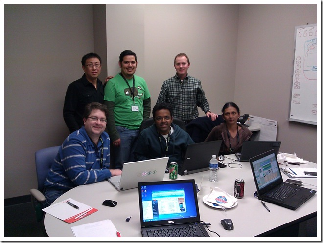2011 was my second year at Dallas Give Camp. It was just as much fun this year as it was last year.
Give Camp is a chance for developers to donate their time to local charities. While it started in Dallas four years ago, it has quickly grown to include over 25 cities.
Second Wind revisited
Last year, I had the opportunity to help out Second Wind, a local organization that helps families in need to have Christmas gifts for their children. We built them a web application in which the volunteers could organize schools, families, and sponsors. It was an ASP .NET Web Forms application built using Entity Framework 1. I was pleased with the progress that we were able to make, and the charity was happy to move away from a paper-based system.
This year, Second Wind returned for some enhancements to the application. I was not on that team, but I was proud nonetheless to see their results. They ported the Web Forms application to MVC 3 and greatly improved the look and feel. They also added reports that the volunteers found that they needed. Over this past year, they integrated the app into their workflow and discovered some manual processes that they could automate. This is iterative development at its best: put the app into production, see how you actually use it, and then come back to add features.
Legal Hospice of Texas
While my old charity was getting the help they needed, I was assigned to a new charity. New for me, at least. Legal Hospice of Texas ensures that people with incurable diseases get the legal help that they need to put their affairs in order. Two years ago, they participated in Dallas Give Camp to get a new web site built. They were very happy with the look and functionality of the site, but it was difficult for them to make changes on their own. They needed a Content Management System (CMS).
We evaluated several alternatives, including SiteFinity, MojoPortal, and DotNetNuke. We chose SiteFinity for its ease of use. We liked how a non-technical person could change not only the content, but also the layout, without editing code. Styling required some CSS knowledge, but it was not necessary to create a custom master page. It had all of the features that our charity needed out-of-the-box, and Telerik was kind enough to donate licenses. It seemed to be a clear choice.
SiteFinity 4
When we started using SiteFinity, however, we ran into some serious issues. The first couple of issues were related to IIS setup, which Matt Legrotte from Verio was quickly able to resolve. But then additional problems arose. They didn’t just affect us; all charities using SiteFinity this weekend were having trouble.
I am not just talking about Dallas. It turns out that half of the Give Camps in the United States were holding their events on the same weekend. Coincidentally (or perhaps not so coincidentally), Telerik was released their new version of SiteFinity on the same weekend. Gabe Sumner, the Telerik Developer Evangelist who supported SiteFinity this weekend, was stationed in Houston. He provided technical training and support via Net Meeting, Twitter, and email. He was in high demand, as all charities using SiteFinity 4 in all cities were having difficulty.
The problems were numerous. When more than one person publish page content at the same time, SiteFinity throws an exception that puts the application into a continuous restart mode. The only resolution is to recycle the app pool. Furthermore, there were some modules that were missing resources, like background images. When someone tried to add one of these modules to a page, it would bring down the application.
Most ominous was the fact that SiteFinity 4 would sometimes loose data. When building a page, you had to be careful to allow SiteFinity to complete all of its AJAX calls. If you navigated to another page too soon, the content that it was saving would not be stored. In most cases, you could correct this by reverting to a previous revision in history, then reapplying your intended changes. One team, however, changed their template after creating several pages. After doing so, not only did the pages no longer contain content, but the revision history brought up “yellow screens of death”, error dumps all too familiar to ASP developers.
In addition, SiteFinity 4 either has a memory leak, or simply consumes more memory than your typical web application. It was exceeding the allocated memory limits at many hosts. Fortunately for us, Verio set their limits much higher than others, so this wasn’t one of our issues.
With Matt’s help, we diagnosed many of SiteFinity’s bugs and learned how to avoid them. We announced “Publishing” before hitting the button, so others would know to wait. We modified the site with FireBug open so we could monitor the AJAX traffic. In the end, SiteFinity was the correct choice. We produced a site that the charity could maintain on their own, and we fully expect that Telerik will fix their bugs. But it would have been better for them to be more honest about the status of their product. They should have told us that version 4 was not production ready, and encouraged us to remain on 3.7, providing an upgrade path. Instead, we were free labor for Telerik, performing the quality assurance that they obviously either did not complete or ignored.
We’re growing
As compared to last year, the venu and the food were both improved. Last year, BravoTech hosted the event. While they continued to be a sponsor this year, their offices were just too small for the sheer number of participants we had. This year, Bearcom provided space. And there was plenty of space to be had. This being a developer event, there was of course pizza. Dominoes was a gracious sponsor of all cities having events this weekend. But in addition, we had barbeque from Spring Creek, and enchiladas from Mexican Inn. And I got a chance to make my 5-4-3-2-1 Waffles.
Despite the technical issues, the charities received some much needed IT work. It was estimated that we provided one man year of effort in 48 hours. Without this event, these charities simply could not afford an effective web site. I look forward to next year.
Posted in Charity | No Comments »
January 6th, 2011
I’ve been conducting lunch classes at work to help us improve the confidence in our software. I call these sessions “Q.E.D.”, based on my foundation in mathematics and my practice of applying mathematical proof to software (see my other blog qedcode.com).
In the past, these have been lectures, where I present mathematical concepts like Degrees of freedom, Closure, or how to write Provable APIs. These sessions have earned me the nickname “Professor”, which I answer to proudly. But lately, I’ve been thinking it would be better for the team if I were a “Sensei” instead.
The end of lectures
As the Professor, I would get up in front of the class and give a lecture. This would include not just PowerPoint, but also a good deal of coding in Visual Studio. I would get some good questions from the group, and I would also throw out questions of my own.
Then I would assign homework. Make this unit test pass, or refactor that API to make it more provable. People would do the homework individually and email me the results. At the beginning of the next class, I would choose the person who did the best homework and recognize them with the Yoda Award. They get to keep Yoda at their desk until next week’s class.
The main problem I saw with this kind of session was that not many people were putting the concepts into practice. Only two or three people would email me homework each week. It was a different set of people each time, so I wasn’t concerned about particular individuals. But work and other obligations got in the way, people didn’t seek help from me or each other, and the week just slipped by.
To solve this problem, I decided that we should do homework in class. When thinking about how practically to do that, I remembered the evenings I spent at a local meetup group called Geek Night, hosted at Thought Works and led by local Though Worker Paul Hammant. At Geek Night, we pair program on open source projects.
To get people practicing together, we need the pair programming bit more than the open source bit. So I decided to have them pair on very simple exercises at first. We are starting off with the Bowling Game Kata. But instead of solving the whole thing, I’ve broken it down. The original kata has you write test like “When I roll 20 gutters, my score is zero” and “When I roll 12 strikes, my score is 300.” That’s too big, in my opinion. The problem should be broken down into testable pieces that you can then assemble into a working solution.
The first piece that we are working on is a class called GameData. This class will record all of the rolls. It will eventually be used by the Frame class, which will observe rolls by index. This leads to a number of simpler test, like “there are initially no rolls” and “after one roll, you can retrieve the first roll by index.”
With that inspiration, I closed the classroom and opened a dojo. In a martial arts dojo, the sensei doesn’t stand at the front. He walks around and interacts with the students. The students work individually or in pairs on routine forms. The sensei will call out commands, and correct individual students on their form.
The rules of the dojo
I brought in a deck of cards. I leave two cards of the same value on each desk (for example the 3 of hearts and the 3 of spades). The other two (3 of clubs and 3 of diamonds), I put in a deck near the door. When you enter the room, you take a card. You sit at the table with that value. This creates up to 13 pairs. I have on average 12 people attend, so I only used Ace through 6. If we have extra people, then we create additional pairs. If we have empty chairs, we consolidate. And if we have an odd number of people, one pair becomes a triple.
Each person brings a laptop with Visual Studio 2010. They have all pulled the same solution from TFS and mapped it to their drive. When we are in the dojo, we cannot connect to the network. So we all open the solution and select “Go Offline”.
I give the group a requirement to test. For example, “Given a GameData class, the Rolls collection should initially be empty.” One person writes that test, which should initially not compile (the test uses a property that the code doesn’t have yet). The other makes it compile (by adding the GameData.Rolls property), sees it fail, and then makes it pass.
I walk around the room observing how each pair is doing. If they write working code without seeing the test fail, I ask them to delete the code and see the failure. If they are leaving sloppy tests behind, I ask them to refactor. If they are using the debugger, I ask them to make the test fail in such a way as to tell you why it failed. And if their test names don’t reveal their intention, I ask them to rename them.
When every pair has the test working, I call out the next test. “When I add a roll, I can get that roll by index 0.” The person who wrote the code last time writes the test this time. Then they pass it off to their partner to write the code.
In the first hour, we were able to get through 4 tests. This included learning the rules of the dojo, setting up the project (for those who didn’t come prepared), and leaving 10 minutes at the end.
During the last 10 minutes, I ask each pair to bring their laptop to the projector and show us their tests. We all ask questions about the tests and the code. The pair defends their naming, their refactoring, and their implementation. “The test”, I explain, “is the example that you give to the consumers of your API. It says, ‘I want you to use this class in this way.’ Is this the way you want people to see your API?”
Finally, each pair selects one other pair that has the best code. They cannot select themselves. The pair must vote as one. They write down that pair’s number (Ace through 6 in my case). Then we reveal the votes and decide the winner. The winners get to share Yoda for the week.
When they get back to their desks, they hit the “Go Online” button to reconnect the solution to TFS. The winning pair gets to check in their code. Everyone else must roll back. Then next week, everyone gets latest and starts from there. This encourages people to vote for the code that they want to work on.
The reaction so far
People really seemed to enjoy the first session. More importantly, it was the most engaged that I saw them since we started these lunches.
All of the pairs made some pretty basic mistakes. Not all of them realized that they were mistakes. For example, one pair did not refactor between tests. They took each test as a separate requirement that, once completed, could not be altered. So when they saw that another pair had refactored the first test, they complained that they had rewritten requirements. I explained that the requirement was still met, but now the design was improved.
If I were a real sensei, I would not feel the need to explain. I would simply correct, expecting that understanding will come in time. I don’t feel that I can take this approach with my team at this point. Perhaps eventually we will be able to leave our egos at the dojo door.
I had to come up with the rule that you vote for another pair because initially everyone voted for themselves. Rolling back your own code is painful at first. Over time, they will recognize that deleting your project at the end of the kata is actually quite a cleansing sensation.
Posted in Uncategorized | No Comments »
December 2nd, 2010
Microsoft hosted a Silverlight Firestarter event. It was important for Microsoft to reset the Silverlight message after the Mary Jo Foley incident at PDC10. The most important piece in this strategy was Silverlight 5.
I was very excited today to see some of the new features coming in Silverlight 5 to support databinding. As Scott Guthrie says, this will bring Silverlight into even better parity with WPF. There are two features that I think are most important: implicit DataTemplates and markup extensions.
Implicit DataTemplates
I am a big believer in creating a DataTemplate based on the type, rather than explicitly setting a DataTemplate in XAML. This supports polymorphism to the view. If you have a heterogeneous list, this technique lets you express the view of each element declaratively. If you add a new type of item to the list, you just add a new DataTemplate to your resources.
Most importantly, this lets the View Model be in control. I’ve often said that the view model locator pattern is backwards. When the view locates the view model, navigation goes to the view first. This leads to some awkward code. But when we navigating to a view model, all of the navigation code is naturally in the right place. We can allow the resources to determine the correct DataTemplate. This technique is covered in Convention-based view model registration.
Markup extensions
The original Update Controls XAML interface was a binding extension. That is why it took so long to port Update Controls to Silverlight. The Update markup extension provided WPF data binding without INotifyPropertyChanged. It bound directly to your view model.
To support Blendability, and to enable the Silverlight port, I added ForView.Wrap() to the library. This method wraps your view model so that the built-in Binding markup extension can use it. The wrapper has many disadvantages:
- It hides data annotations like Required and Display.
- It adds a performance tax because it uses reflection and (in the Silverlight versions) DependencyProperties.
- It requires you to call ForView.Unwrap() whenever accessing objects in code behind.
- It interferes with implicit DataTemplates.
The benefits of Blendability and Silverlight support outweighed these disadvantages, so it was with great sadness that I changed my recommended approach from the Update markup extension to ForView.Wrap(). Silverlight 5, however, is going to give me the choice back. If I can find a way to change how Blend does databinding, I’ll have the best of both worlds.
What does this mean for Update Controls
There will be a new version of Update Controls as soon as I get my hands on the Silverlight 5 bits. It will reintroduce the Update markup extension to Silverlight. I expect this version to be closer to the WPF code base, which should make code maintenance easier.
This also means that more Update Controls demos are coming. The joy of knowing that improvements are coming was sullied every time a demo implemented INotifyPropertyChanged. That interface is a stick in the eye every time I see it. It especially hurts when I see John Papa list INPC as one of the benefits of RIA services. I want everyone who watched the Silverlight Firestarter to be able to compare those demos with ones that don’t have the code clutter and pain of this extraneous interface. Let it be known that INotifyPropertyChanged is Obsolete, now more than ever.
Posted in Silverlight, Update Controls | No Comments »
November 28th, 2010
Windows Phone 7 applications have a better sense of presence when they have their own background image. By default, the background is white for the light theme or black for the dark theme. Using only XAML markup, we can choose either a light or dark background image instead.
Create two 480x800 images, one dark and one light. The easiest way to do this is take a photograph, scale and crop it to the right size, then adjust the contrast and brightness. For both images, you want a low contrast. For the dark image, turn down the brightness. For the light one, turn it up.
Save both as png, and add them to an Images folder in your application. Set “Build Action” to “Resource” and “Copy to Output Directory” to “Do not copy”.
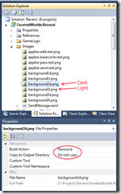
Create two Image controls in your page’s LayoutRoot. By default, the LayoutRoot is a Grid offset 30 pixels from the top. Set the margins to 0,–30,0,0 so that the image fills the entire page. The grid has two rows by default, so set the RowSpan to 2.
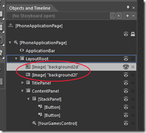 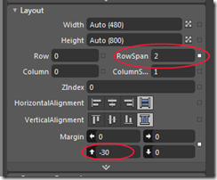
Set the Source of one Image to the dark png. Set Stretch to UniformToFill. Then bind its visibility to PhoneDarkThemeVisibility. Set the Source and Stretch of the other Image, and bind its Visibility to PhoneLightThemeVisibility.
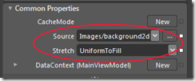 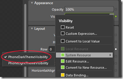
Now using the Blend Device window, switch between dark and light to make sure the result is what you expect.
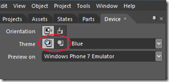 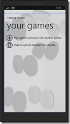
This all works directly in XAML without editing code. You can use this technique for most visual aspects. But if you need to detect which theme is active in code, Magnus Johansson has instructions at Insomniac Geek.
Posted in Windows Phone 7 | No Comments »
November 24th, 2010
My head-to-head Reversi app is almost ready for the Windows Phone marketplace. I finally have it on my phone, and I am testing it rigorously.
I’ve owned an iPod Touch, an Android G1, and now a Windows Phone 7. Based on that experience and the reactions from my testers, here’s what I think makes a good phone app.
Quality
It’s hard to quantify but easy to recognize. If an app feels hacked together, I don’t want to use it. It doesn’t matter if it’s only 99 cents, or even if its free. I don’t want to reward an app developer who does not obviously care.
Purposefulness
We are used to doing work with our computers. We are actively involved in every step of the process -- clicking on menus, filling in forms, verifying results.
But a smart phone is an agent. I want to tell it what to do, and then let it do the work. If I have to go through all the steps myself, then the phone is the wrong platform.
Disconnected operation
Smart phones have many radios, so connectivity shouldn’t be a problem, right? Not so. These radios don’t work well indoors, on the road, or in large crowds. If an app needs a connection to work properly, it may as well be a web page.
Smart phones have a lot of storage. I expect my apps to use it. When I pull up IMDB, I expect that the list of movies on the front page will be similar to the ones I saw yesterday. It shouldn’t have to hit the network. Refresh the list in the background, and let me work with the information that I already have.
Discoverability
There is no instruction manual that comes with an app. A user needs to figure it out based only on the clues that it gives them.
An app should know the very next thing that the user wants to do. It should put that plainly on the screen with a meaningful icon, a natural gesture, or as a last resort text.
An app should also anticipate what the user might try. For example, if you have a Windows Phone, press the home button on the lock screen. The screen will bounce to indicate that there is something below it. The user swipes up to see what it is, thereby learning the correct unlock gesture.
Fit the platform
An iPhone app should have an icon with rounded corners and reflections. It should use the standard page animations, title, and back button showing the title of the prior page. A Windows Phone app, on the other hand, should have a flat square icon, and no on-screen back button. Pivot and panorama work on the Windows Phone. Don’t try them on Android.
The mistakes I’ve made
My Reversi game made several of these mistakes.
With respect to quality, it had some serious bugs when I started testing with other people. I had forgiven these bugs, since I know the workarounds. But others did not. Get other people to test your app.
Another quality issue was responsiveness. Initially it took a full second for the game board to appear. This confused people. So I made the game board a separate XAML element. It still takes a second for the pieces to initially appear, but at least the game board is there. It feels like a more solid app.
A final quality issue was that it was far too easy to accidentally hit the home button. I put a piece at the bottom of the board to indicate that it is your move. You drag this piece onto the board to play. Unfortunately, the piece appeared just above the home button on the physical device. My wife went to the home screen once for every 2 or 3 moves that she made.
To provide purposefulness, I give you additional information about the game. I show you not only the pieces that you are about to capture, but also the moves that you are allowing your opponent. Reversi, as it turns out, is more about moves than it is pieces. But I didn’t take purposefulness far enough. I also needed to continue showing those moves after the piece is dropped, so your opponent can easily see what’s available to him. It raises the level of abstraction.
For discoverability, I show a pulsing glow behind the new piece. People understand that this means “drag me”. But I didn’t anticipate what the user would try. Most people just try to touch the square where they want to move. Since that’s what they try, I now honor that gesture.
Disconnected operation is the one place where I focused my attention. Reversi is the inaugural Correspondence application, and Correspondence was designed for disconnected operation. Still, there were a few things that I had to fix. Most significantly, if you make a move while disconnected, it is queued on the device. Once you are connected again, you have to tell the application to send the move. The way you do that in Reversi is to return to the main screen. This is naturally what the user would do, since they can’t do anything else on the game screen.
Finally, to fit the Windows Phone platform, Reversi uses very simple flat graphics. However, the platform also calls for background images. The application feels incomplete without photography. So I’m taking pictures of real Reversi pieces to give the user the feeling of presence.
The app will be in the Marketplace after another week or two of testing.
Posted in Windows Phone 7 | No Comments »
|


{kind=link}
{kind=link}
{kind=link}
{kind=link}
{kind=link}
{kind=link}
{kind=link}
{kind=link}
{kind=link}
{kind=link}
{kind=link}
{kind=link}
{kind=link}
{kind=link}
{kind=link}
{kind=link}
{kind=link}
{kind=link}
{kind=link}